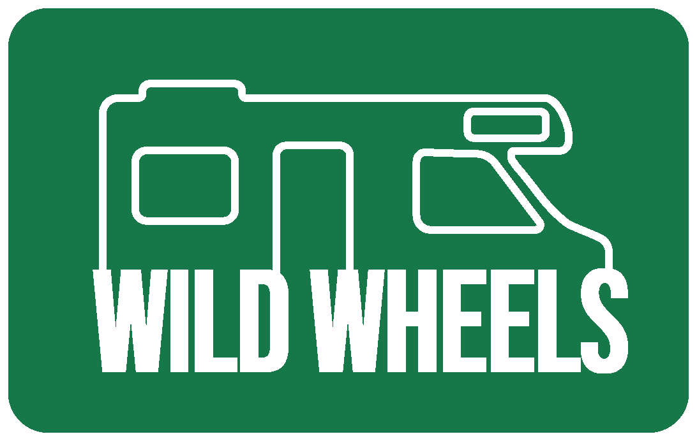

Corporate
Content

Brand name and logo:
Our logo captures what Wild Wheels stands for: freedom, simplicity, and the spirit of adventure. With a minimalist campervan outline and the name boldly positioned where the wheels would be, it visually represents your journey starts with the right wheels.The logo’s clean lines and compact shape reflect our promise to keep things simple and clear. No fluff, no confusion, just practical guidance and inspiration to help you hit the road. The two versions, one in dark green and one in light green, are designed to be flexible and easy to use across digital platforms, while always keeping that fresh, nature-driven feeling alive.
In a world where everything feels overly scheduled, Wild Wheels invites you to break free. Whether you are planning a quick weekend escape or mapping out a cross-country route, our platform offers ready-to-go routes. You choose the destination—we’ll help you get there.
Brand Vision
In a world where endless travel options can feel overwhelming, we believe in making the journey easier. Because planning your adventure should bring excitement, not stress, giving you the confidence to explore with freedom and flexibility.Wild Wheels is all about freedom. We believe that traveling shouldn’t be complicated, and everyone should have the chance to hit the road without hassle. Whether it’s a weekend getaway or a full-time van life adventure, we make sure you know what to expect.
In a world where everything feels planned and predictable, we offer an escape. We make it easier to take the leap, carve your own path, and embrace adventure. No vague promises, just clear info and practical help.
You choose the destination: we will help you get there.
Persona
Lisa and Tom capture the exact picture of what Wild Wheels aims to represent:Freedom, simplicity, and the drive to get the most out of their travels — without overcomplicating things. They’re adventurous spirits who love spontaneity but still want a sense of certainty on the road. No chaos, just clarity.
Their frustrations? Vague sources of information, not knowing which route to take, and struggling to plan activities that actually match their journey. They don’t want to be tied down, but they do want the freedom to effortlessly follow the routes that suit them best.
Brand Values
- Guidance: Because the road should feel open, not overwhelming.- Inspiration: Because freedom starts with a spark.
- Sustainability: Because nature is our co-pilot.
- Adventure: Because the unknown is where stories begin.
Guidance - "We make the road clearer"
Traveling by camper can feel overwhelming, from planning routes to finding places to stay. That’s why clear guidance is at the heart of everything we do. We provide practical tools, honest tips, and ready-to-go routes so travelers can hit the road with confidence, hassle-free.
Inspiration - "We spark your next move"
Freedom starts with imagination. We don’t just want to help travelers plan; we want to inspire them to hit the road. By sharing stories, visuals, and routes that show what’s possible, we spark ideas and get people moving.
Sustainability - "Leave nothing but tyre tracks"
Vanlife and nature go hand in hand. That’s why we encourage sustainable travel, showing respect for nature, supporting local communities and making smart choices along the way. Our routes and tips are designed with the conscious traveler in mind.
Adventure - "The open road is yours"
Adventure isn’t just found in faraway places; it’s in the courage to take your own path. We believe everyone can choose their own adventure, big or small. Our role is to make that journey easier and more accessible, without spoiling the adventure with overplanning.
About us "our mission: Your adventure"
At Wild Wheels, we believe that adventure begins with simplicity. In a world full of choices and endless travel possibilities, we make planning your camper trip clear, inspiring, and most of all: fun. We believe that travel doesn’t have to be complicated, it’s about the freedom to choose your own path and discover what the world has to offer.Our mission is to help you get the most out of your adventure, with practical tips, honest insights, and route inspiration that really makes a difference. We don’t promise vague dreams, but provide real, actionable information to help you hit the road with confidence. Whether you're planning a weekend getaway or setting off on a months-long journey, we make sure you're fully prepared.
Wild Wheels is for anyone who craves freedom, is curious about the unknown, and isn’t afraid to embrace adventure. We’re here to encourage you to chase your dreams, embrace the journey, and discover what’s possible, at your own pace. By simply laying out the road ahead and offering practical tools to guide you, we help you find the freedom you’ve been seeking – your way, your route.
Supporting visuals
Photos on websiteThe photos on the Wild Wheels website should convey a natural, adventurous, and free atmosphere. They need to be related to the countries for which we offer routes, showcasing what those destinations have to offer. There are no strict requirements for the photos, but they should fit the overall look and feel of the website and contribute to the sense of simplicity and adventure.
Interview (problem) insights:
Similarities between the interviews:- Freedom and flexibility: All interviewees state that traveling with a camper gives a lot of freedom. They like to be able to decide spontaneously where they are going.
- Challenges in route planning: They all experience stress when planning a route. They do not want to miss the most beautiful places but notice that too much planning sometimes causes stress.
- Technical problems: Everyone has had to deal with technical problems, such as a broken refrigerator, a leak, a starting problem or a flat tire. The solutions differ: some seek help via online groups, others try to solve it themselves.
- Comfort and furnishings: Although they find traveling with a camper comfortable, they all have comments about limited space. The kitchen and bathroom are experienced as small. Extra storage space is often mentioned as an area for improvement.
- Costs and maintenance: They recognize that a camper is expensive to purchase and maintain. Unexpected costs sometimes occur, such as repairs.
- Safety and regulations: Everyone are aware of possible unsafe situations and prefers to choose overnight accommodation where other campers are also located. They also sometimes experience uncertainty about local regulations.
- Use of apps and online tools: All interviewees use apps such as Park4Night and Google Maps to find campsites and routes, but sometimes this leads to too many choices and uncertainty.
Differences between the interviews:
- Age and experience: Desiree and Anne are both 56 years old and have been traveling with a camper for a long time, while Jazzlynn only has four years of experience and started with a self-converted bus.
- Travel purposes: Jazzlynn mainly uses her camper for road trips in nature, festivals and short trips. Anne and Desiree focus more on longer trips and hiking destinations.
- Technical knowledge and problem solving: Anne's husband can repair a lot himself, while Jazzlynn is more likely to seek help via Facebook groups. Desiree looks for a campsite or garage when problems arise.
- Driving experience and parking: Anne does not like driving the camper herself and prefers to leave this to her husband. Jazzlynn and Desiree drive themselves but find parking difficult.
- Personal preferences in the camper: Jazzlynn misses a permanent bathroom and wants a better kitchen. Anne mainly wants more storage space and better ventilation. Desiree mentions a few points for improvement, except for extra storage space.
Similar problem:
All interviewees experience choice stress when planning their route and overnight stays. They don’t want to miss anything and use online tools to find the best places but notice that this sometimes causes uncertainty and procrastination. They would benefit from a tool that offers route simplification without too many options.
Production
Justification website Wild Wheels
Homepage:The homepage of Wild Wheels is designed to directly show the core values of our brand: Guidance, Inspiration, Sustainability and Adventure. These values are originated from our brand vision, where Camper travels are seen to combine freedom, nature and traveling consciously. Our target group consist out of active travellers between 25 and 55 years old, who value oversight, self-reliance, aesthetic and sustainability. These brand values are translated into the visual design, the typographic and the content structure of the homepage.
Use of colour and visual identity
The use of colour supports the brand values on the visual level:
Guidance is expressed in the functional use of color to guide users through the site. Dark green (#16433b) is used as the primary color for headings and backgrounds. This color stands for stability, calmness, and reliability.
Inspiration is stimulated via the contrasts and accents. Light green (#77b84b) was chosen as a secondary color for calls to action and subheadings. This color brings freshness and energy to the design and draws users’ attention in strategic places, such as the Instagram button.
Sustainability is visually shown via the natural color pallet and the minimalistic use of the extra visual elements. By choosing a calm light base with less colors and some white room, the site remains functional and sustainable look.
Adventure is clear via the large photographs of the countries in combination with the nature colors. The colors invite the user to explore; the pictures give them a clear feeling of what it could be like on the road with their campervan.
The rest of the colors were picked to keep the site as approachable as possible:
White (#ffffff) for the navigation texts on the dark-green backgrounds. This gives a high contrast and ensures good readability.
Black (#000000) for the body text on the white background also creates a great contrast and makes sure that the user has an easy time reading it.
Green (#258849) is used for additional contrast elements.
These colors are consistently used on every page of the site which ensures that the site is recognizable, consistent and trustworthy. They support UX principles such as contrast, consistency and affordance, and strengthen the connection with the user.
Typographic
Bebas Neueis used for headings. It is bold and structured which ensures clarity and impact.
Montserrat Bold is used for subheadings, providing a modern and accessible tone that suits the adventurous but calm feel of the brand.
Montserrat is used for body text. It is clean and readable, consistent and effective across all devices.
Interface and content structure
The homepage opens with a so called “hero-section” where there is a short motivating message, that catches the attention. Directly below is an image carousel has been placed with four photos, each representing a different European country: Portugal, Italy, Slovenia and Norway. By making these images directly visible, the principle of recognition over recall is applied. Users do not have to search but visually recognize what the site offers.
Scrolling further the visitor is taken along in our vision and mission. This is a conscious placement in the user flow, first providing visual inspiration before communicating the underlying values and goals. At the bottom of the webpage is the integrated Instagram feed. This serves as the as a social anchor for the brand and strengthens community building around Wild Wheels.
The homepage follows the principles of visual hierarchy, information architecture and user-centred design. Elements are presented from broad to specific and from inspiring to informative, so that users can orient themselves intuitively.
Routes page
The routes page makes use of a drop-down menu with 4 different countries. This is a conscious choice based on the UX principle of progressive disclosure: users do not get overwhelmed with information but can navigate to content that is relevant to them.
After selecting a country, the user is taken to the country information that they have clicked on, which is always structured in the same way. The structure of these pages follows a fixed pattern:
The country title and some representative landscape photos. Practical information such as toll roads, fuel and charging points, traffic regulations and vignettes. Any special features such as environmental zones or regulations regarding wild camping. Finally, another reference to Instagram, consistent with the homepage.
This structure supports the principle of consistency and standard. The repetition in structure provides predictability and ease of use. The combination of text and images is in line with the learning styles of different users and increases user-friendliness. By presenting important travel information clearly in blocks with clear headings, the principle of content chunking is also applied.
Every country page offers a balance between inspiring images and factual information, so that both the emotional and practical needs of the user are met.
Relation with other subjects of the project
The visual and content choices made for this website are closely linked to other parts of the project, including the Lean Canvas, the marketing strategy and the brand identity.
In the Lean Canvas it was found that campers often get lost in fragmented information on multiple websites, and need a user-friendly, reliable and inspiring platform that brings it all together. Wild Wheels offers that by creating one central place where users can find both practical route information and visual inspiration.
In addition, our design choices are in line with Wild Wheels' brand vision: guidance, inspiration, sustainability and adventure. These values are reflected in the calm structure of the website, the limited use of color, the strong visual focus on nature and the intuitive, simple navigation. In this way we create a user experience that is clear and gives confidence in keeping with our role as a guide for adventurous travellers. Our choice to prominently include Instagram in the design also stems from the marketing strategy in which social media plays a central role in community building and visual brand identity. The website is consistently designed on every page, which ensures a clear and reliable appearance. This ties in with how we want to present ourselves as a brand. Because the design is aligned with our brand strategy and the needs of the user, the website is not only informative, but also a powerful tool to reach and convince our target group.
Corporate
When you click on corporate you can again find a drop-down menu. Here you can find all the information about the process, think about marketing, management and our content.
Mock-up website
Link to testing protocol videos
Click here for the testing protocol videosTesting Protocol
1.Who did we test? Young adults, students2.What were they asked to do? Test the website and provide feedback
3.What was the goal of the test? To create an analysis, identify our strengths, and discover areas for improvement
Summary of Finding
1.First Impressions and CommunicationWas it immediately clear to the tester what the website was about?
All testers had a clear first impression that the website was about travel. After seeing the logo (Wild Wheels with a camper outline), it became clear that it was about camper travel.
Did the tester spontaneously use words like “camper,” “travel,” “routes,” etc.?
The words "camper" and "travel" were mentioned most frequently. The “routes” button encouraged testers to click and explore further. Three out of six testers were quickly drawn to the routes section, assuming it would provide more information, which was indeed the case.
Did the visual style (colors, photos, layout) evoke the right feeling?
The homepage photos were very effective. All six testers found the large images of the countries beautiful and fitting for the website. The extra feature where they could click and see different photos of countries was engaging and well received.
Did the tester feel inspired or confused?
Overall, testers found the information useful. Four out of six testers mentioned that the "Routes" page felt overwhelming due to the amount of information. They also noted that they would prefer more variation between text and visuals.
Goal Orientation and Use
What was the tester's goal when opening the site? (If mentioned)
The testers we approached were there specifically to help us by testing the website. They did not visit with a personal goal like finding information or making a purchase, but purely to provide feedback on usability, clarity, and design. Their focus was on spotting any confusing or unclear aspects and suggesting improvements.
Did the tester know where to click to achieve that goal?
Almost all testers could easily find the information they were looking for and knew where to click to access different parts of the website. The only element that required extra prompting was the Instagram link, which wasn’t immediately visible or clicked on. One tester suggested placing the Instagram button in the top right corner to make it more noticeable and accessible.
How quickly did the tester find relevant information or functionality?
All testers had explored the entire website — some even multiple times — within three minutes. This indicates that the navigation and structure are intuitive enough for users to quickly find the main content.
Were there any visible/audible moments of confusion or frustration?
There were no clear signs of confusion or frustration among the testers. In general, they seemed confident about where they were on the site and understood the purpose of each section. There were a few small moments of hesitation with less noticeable elements, but nothing that led to annoyance or disruption of the experience.
Navigation and Structure
Did the tester follow a logical route through the site?
Four of the testers followed the expected, logical order when exploring the site. A few others went directly to the routes page and only discovered the vision section later. This suggests that some users are more goal-driven, while others explore step by step.
Were the menu structure and links used intuitively?
In general, testers found the menu intuitive and had no trouble navigating through the different sections. The Instagram link, however, required some guidance, as it wasn’t immediately obvious to the testers. This indicates that its placement or visibility could be improved.
Were there comments about clarity, layout, or visual organization?
Testers responded positively to the website’s color scheme and described the layout as clear. One tester mentioned that the text on the "Routes" page could be improved for better readability. The section headers and use of different colors were appreciated. One tester specifically noted the clear and consistent use of dark green and light green, which added to the visual appeal.
Content and Language
Was the text clear and engaging for the tester?
All testers found the text clear. The content was generally engaging and relevant. Some testers lost interest slightly faster on the "Routes" page — not due to the content itself, but because of the less structured layout. The section about gas stations was considered helpful and relevant by three out of six testers.
Was there enough explanation for buttons, terms, or features?
Most buttons were self-explanatory and clearly labeled. Testers generally understood what would happen when they clicked on something. No one reported confusion over terms or functions. However, adding a bit more context in certain areas such as the routes page, might make the experience even smoother.
Technology and Functionality
Did all buttons and links work as expected?
Yes, all buttons and links worked properly, with no technical errors during testing.
Was anything experienced as slow, incorrect, or confusing?
Nothing was described as slow or malfunctioning. One point of feedback was that the “See more” button under the photos wasn’t clicked on often. This may indicate that it’s not visually prominent enough or not immediately clear that it leads to additional content. A visual tweak or repositioning might improve this.
Overall Experience
Did the tester give a positive, negative, or mixed evaluation?
Testers generally gave a positive evaluation. They found the website clear, visually appealing, and aligned with the overall concept. The main points of criticism were the cluttered feel of the "Routes" page and the low visibility of the Instagram link.
What specific improvement points did the testers mention?
The most mentioned improvement was making it easier to access the lower country sections on the "Routes" page for example, by adding shortcuts or a different layout instead of requiring lots of scrolling. Another suggestion was to place the Instagram button at the top of the site for better visibility.
Were there recurring comments among multiple testers?
Yes, several testers mentioned that the "Routes" page felt a bit cluttered and that the Instagram link was hard to find. On the positive side, many testers commented on the consistent style of the website, the cohesive look and feel, and the beautiful, fitting images used throughout.
Positive and Improvement points
Test 1:Positive: the participant instantly knew what the site was about. Good pictures were used.
Point of improvement: the Instagram logo could be more at the top of the page.
Test 2:
Positive: the participant thought the site was clear to navigate and has relevant information.
Point of improvement: the participant missed a call to action to click on the Instagram logo.
Test 3:
Positive: The participant thought that the style guide was very consistently used.
Point of improvement: the participant wanted a little bit more pictures because she was a bit overwhelmed by the text.
Test 4:
Positive: the participant finds the home page very nice with the large pictures and the big quote on top.
Point of improvement: the participant thought that the pictures could align better with the text in the routes.
Test 5:
Positive: The participant liked the modern look of the site.
Point of improvement: The participant thought the text on the photos of the homepage was a bit small. She also suggested to put a “go to the top” button in de footer of the ‘routes’ page.
Test 6:
Positive: the participant thought it was instantly clear what the site was meant for.
Point of improvement: the participant missed a selection menu in the ‘routes’ page, so that you don’t have to read the whole text to go to your desired country.
Marketing
Introduction
In a world where adventure is becoming increasingly important, Wild Wheels not only provides the means to get on the road, but also the guidance to do so in the best possible way. We understand that travellers like to choose their own path, but at the same time they need guidance, inspiration and reliable information in one place. This Communications and Media Plan describes our strategy to achieve this goal. It shows how we build brand awareness and generate traffic to our website.Target Audience
Wild Wheels’ target group consists of adventurous young people between the ages of 18 and 30, who live in the Netherlands. They are often students or starters with a limited budget but still want smart and affordable solutions for their travels. They love road trips, camping, surfing and festivals, and are always looking for inspiration for new adventures. These young people use platforms like YouTube, Instagram and TikTok to get ideas, find tips and learn from others who have been on adventures before. They are looking for practical solutions and inspiration to make their travels comfortable and sustainable, so that they can make the most of their time in nature.Brand Voice
Whild Wheels stands for inspiration and guidance. We help people find their way to freedom and adventure with a clear and motivating tone. Our communication is direct, energetic and purposeful.Platform
Wild Wheels uses Instagram because it perfectly matches our visual style. We want to convey our message primarily through photos, which is why we chose not to use TikTok, which focuses on videos, despite its popularity among our target audience. Instagram is set to be the third largest social network worldwide by 2025, with over 2 billion monthly users. Instagram is particularly popular among our target audience of 18–30-year-olds. In the US for example, 76% of adults aged 18-29 use Instagram (Team, 2025). Sharing photos allows us to build a consistent brand identity and interact more easily with our community. Instagram is easy to use and allows us to build authentic relationships with our customers, which contributes to greater engagement.Consistent Communication
Wild Wheels maintains a consistent brand image across all platforms. Our core values: guidance, inspiration, adventure and sustainability, are central to every message.Tone of Voice
Our tone of voice is positive, inspiring, and accessible. We engage our community with a mix of enthusiasm and expertise, challenging and supporting people. On social media, the emphasis is on visually strong content that reflects the adventurous lifestyle.Justifications Social Media
We combine inspiring stories, practical tips, and interactive content to stimulate engagement and build an active community. Additionally, we stay true to our brand identity by adhering to our style guide, incorporating our specific shades of green and white across all posts and visuals. This consistency in colour enhances our brand recognition and reinforces the feeling of adventure and sustainability that Wild Wheels stands for.Week 1
The first week was focused on introducing our brand. We explained who we are, what we stand for and what we have to offer. That’s why the captions were longer, so we could share more information. We also focused on increasing our reach by actively following other people and gaining more followers.
Week 2
The second week focused on engaging with our followers. Captions were shorter and more focused on the viewer of the post. We also continued to actively build our following.
Week 3
We noticed that followers were particularly active in responding to our stories, especially the Dilemma Tuesday which was a hit. These posts generated a high number of viewers. That is why we decided to repost the Instagram posts in the stories as well, hoping that this would generate more interaction on the posts themselves.
Week 4
the focus was even more on interaction. We used polls and quizzes to get conversations going and noticed that followers responded well to this. However, we are struggling to get real interaction. We do see that followers view the posts but comments and likes on the posts are absent.
Timing
Using data from Shopify, we researched the most effective times to post on Instagram. Shopify provides valuable insights into when users are most active, allowing us to optimize our posting strategy for maximum engagement (Wat Is de Beste Tijd Om op Instagram te Posten in 2024?, z.d.).KPIs
Response
Goal: I will post 3 times per week on Instagram for the next 4 weeks, including at least 2 stories per week, using relevant hashtags, location tags and interactive elements such as polls or question stickers to increase my visibility and engagement
Outcome
Like goal: Each post will receive an average of 5-10 likes over the next 4 weeks, as measured by Meta Insights.
Comment goal: Each post will receive an average of 1-3 comments over the next 4 weeks, as measured by Meta Insights.
Share goal: Each post will be shared 2-5 times over the next 4 weeks, as shown in Meta Insights.
Impact
Impact
In the next 4 weeks I want to attract at least 50 Instagram followers, measured via Meta Insights, through consistent content, relevant hashtags and possible collaborations.
Content Calendar

Link to Instagram
Click here for the InstagramFuture Planning
If this project were to continue, we would implement several strategies to further increase the engagement and visibility of Wild Wheels. A key step would be to make more use of user-generated content. For example, by inviting followers to share their own camper stories or photos using our hashtags. This not only encourages more interaction but also fosters a sense of community and provides authentic content.Additionally, we would experiment with Instagram Reels, even though our current focus has been on photos. Short videos can significantly boost engagement and help tell our brand story in a dynamic way. We would also consider collaborating with micro-influencers in the travel or outdoor niche to reach new audiences and build credibility.
Based on my experience with this project, we would also start earlier in the process with interactive formats such as polls and quizzes, as these have proven to be effective in boosting engagement. Furthermore, we would use A/B testing to explore which types of content and which posting times perform best, so future campaigns can be executed even more strategically.
Finally, we would consider adding a blog section to the website with in-depth content about routes, tips, and sustainable travel tools, which would also contribute to SEO and help increase our online visibility.
Key points
- Make more use of user-generated content
- Instagram Reels
- Collaborating with micro-influencers
- Start earlier with interactive formats
- Blog section
Professionalism
During this project, we paid close attention to professionally presenting our brand, Wild Wheels. All visuals and posts were aligned with our style guide, incorporating consistent colors and tone of voice that reflect our brand identity. The content was not only visually appealing but also tailored to the expectations of our target audience.Our brand style was clearly implemented on the Instagram account, resulting in a recognizable and cohesive look. In addition, all posts and stories were neatly categorized and presented in a well-structured content calendar.
Management
Link to interviews
Click here for the interviewsWhat makes us different?
We offer a complete, all-in-one campervan travel solution which allows travelers to easily plan their routes, locate trustworthy information, and combine must-see locations with necessary stops all on a single, user-friendly platform. We provide a customized experience made especially for campervan travelers, in contrast to dispersed internet forums, out-of-date guidebooks, and generic map apps.Why we're worth paying attention to:
Reliable, up-to-date information in one placeNo more searching through several sources, our platform collects the most up to date, precise information on campgrounds, campervan friendly routes, gas stations, dump stations, and laws.
Smart route planning made for vanlife
In contrast to other GPS programs, we assist you in mapping out the most picturesque routes, rest areas, and undiscovered treasures, ensuring that your trip is both effective and memorable.
Effortless activity and sighhtseeing integration
Along your planned path, you may effortlessly combine outdoor activities, cultural experiences, and must-see sites, providing a well-rounded vacation free from the burden of last-minute preparation.
Community powered recommendations
Build a reliable network of likeminded adventurers by connecting with other campervan travelers to exchange knowledge, advice, and real-time updates.
User friendly and mobile optimized
Whether you're making last-minute changes or planning ahead, our user-friendly platform guarantees that everything you need is at your fingertips.
Why choose us?
Because the adventure, not the burden of preparation, should be the main focus of campervan travel. We make road vacations exciting, stress free, and well planned so you can spend more time exploring and less time looking for things.Unfair Advantage
Smart route planning with seamless experience integration- Activities, sightseeing, and necessary stops (such as gas stations, supermarkets, and EV charging stations for electric campers) are all carefully included in our route planner.
- Why competitors are unable to replicate this: Traditional GPS and travel apps concentrate on navigation, while our technology customizes the experience for campervan users.
Brand trust and niche authority
- As the most trusted source on campervan travel, we provide not just a planning tool but also in-depth information, insider knowledge, and tried-and-true guidance.
- Why competitors are unable to replicate this: Consistent value, accuracy, and community involvement are the basis of brand credibility, which cannot be quickly duplicated.
Channels:
For us to reach out to our customers we use one important media channel and that is Instagram. We want to use Instagram to reach out to our customers, because Instagram matches our visual style and sharing photos allows us to build a consistent brand identity and interact more effectively with our community. Instagram is easy to use and allows us to engage with a broader and greater audience. We will share a post or a story from Monday till Friday to keep our audience informed and give them inspiration. We combine inspiring stories, practical tips, and interactive content to stimulate engagement and build an active community. Additionally, we stay true to our brand identity by adhering to our style guide, incorporating our specific shades of green and white across all posts and visuals. This consistency in colour enhances our brand recognition and reinforces the feeling of adventure and sustainability that Wild Wheels stands for.Services and Product
Our digital platform serves as a complete travel companion for campervan travellers, tackling the most common problems like as difficult trip planning, complex route planning, and unclear information sources. We offer a comprehensive solution that simplifies the entire travel process, in contrast to outdated guidebooks, scattered internet forums, or basic navigation apps. Without depending on unreliable sources, users can find campsites, authorized parking spaces, gas stations, and service stops with confidence thanks to real-time, confirmed trip data. Our clever route planning tool makes trip planning easy by combining must-see sites, picturesque routes, and necessary pauses. In contrast to other travel resources, our platform is made especially for vanlifers and provides personalized suggestions and off-grid camping locations. We also encourage an active vanlife community where travellers can exchange reviews, advice, and real-world observations, guaranteeing that everyone gains from first-hand knowledge. Our technology combines community-driven insights, accuracy, and efficiency to make campervan travel safer, easier, and more pleasurable. All these aspects contribute to our value proposition. Our service also fits our brand identity which shouts: Sustainability, freedom, flexibility, exploration, adventure, independence. Think about sustainable routes, flexible route planning and adventures activities. After we took the interviews, we came to the conclusion that most campervan users were looking for one clear information source, an easy way to plan their route and combine activities along the way. Then we came to the conclusion that we needed to adjust our value proposition to the outcomes of the interviews.Key Metrics:
The first way we could measure our numbers is to divide how active our users are into 3 sections:- Monthly users: The number of users actively using the platform each month. - Daily users: Tracks daily user engagement, showing how often people rely on the platform.
- Average session duration: Measures how long users spend planning routes or interacting with features.
The second way we could measure our numbers is to dive into our growth metrics:
- Number of new sign-ups/registrations: Tracks how many new users join the platform.
- Subscription conversion rate: Measures how many free users upgrade to a paid or premium plan.
- Retention rate: The percentage of users who return after their first visit.
Lastly, we could measure our numbers with interest rates:
- Number of reviews and contributions: Measures how many users contribute travel insights, campsite reviews, or route recommendations.
- Forum or community engagement: Tracks the number of discussions, replies, and interactions within the user community.
- Social media mentions and shares: Indicates how often users talk about or recommend the brand online.
Revenue Streams:
Advertising, affiliate partnerships, subscription-based services, and premium features define our business model. This diverse strategy keeps consumers accessible while guaranteeing a consistent revenue stream.1.Subscription plans:
The first feature that will ensure our revenue is subscription-based services. With this feature we would include:
- Basic route planning, limited access to community insights, and essential travel information are free.
2.Advertising plans:
Next, we want to ensure our revenue with advertisements. With advertising we are talking about:
- Advertisements from travel insurance companies, campervan rental services, and outdoor gear brands.
Affiliate partnerships:
Then we want to ensure our revenue with partnerships with partnerships with travel-related companies for commissions on:
- Campervan rentals
- Fuel and charging station partnerships
- Outdoor gear and travel insurance
- Booking platforms for campgrounds and experiences
One-time purchases
Lastly, we want to ensure our revenue with one-time purchases that customers can make, think about:
- Exclusive campervan travel guides (downloadable PDFs, eBooks, or video courses)
- Custom route planning services (personalized itinerary for users who want expert-planned routes)
Cost Structure
First, we take a look at our fixed costs and these are costs that remain stable, whether we have 1,000 or 100,000 users.1.Fixed Costs
Technology and development
- Web and mobile platform development
- Cybersecurity and data protection
- App updates, bug fixes, and new feature development
Salaries and operational costs
- Core team: 1-2 software developers, 1 content manager/community manager and 1 marketing specialist.
- Office space (if needed) or remote work expenses.
Legal and administrative
- Business registration and legal fees
- User data security
- Accounting, bookkeeping and payment processing fees
Second, we take a look at our variable costs and these are costs that increase as our user base grows.
Variable Costs Marketing and customer recruitment
- Social media ads, influencer collaborations, and Google/Facebook Ads
- SEO and content marketing
Customer support and community management
- Live chat and email support
- Community engagement initiatives
Transactions
- Stripe/PayPal processing fees for premium subscriptions and in-app purchases Partner payouts
- Revenue-sharing agreements with campsite listings and travel partners
Lean Canvas 1
Lean Canvas 2
Lean Canvas 3
Sources
Marketing
Team, B. (2025, 11 maart). Instagram Statistics: Key Demographic and User Numbers. Backlinko. https://backlinko.com/instagram-usersWat is de beste tijd om op Instagram te posten in 2024? (z.d.). Shopify. https://www.shopify.com/nl/blog/beste-tijd-om-op-instagram-te-posten